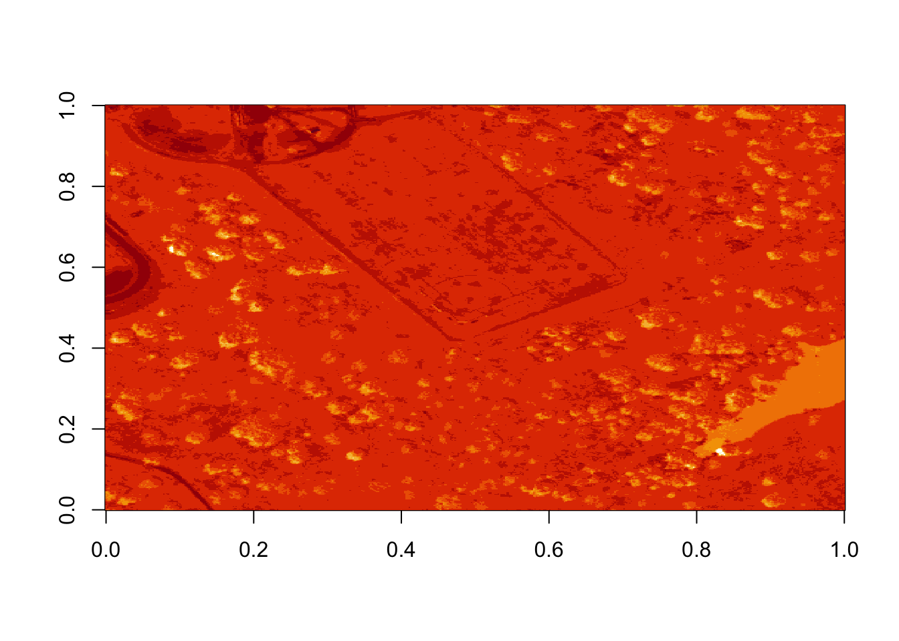
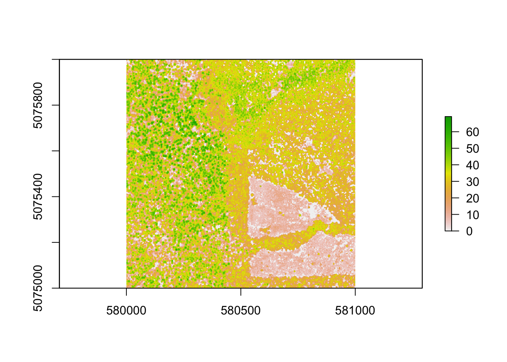
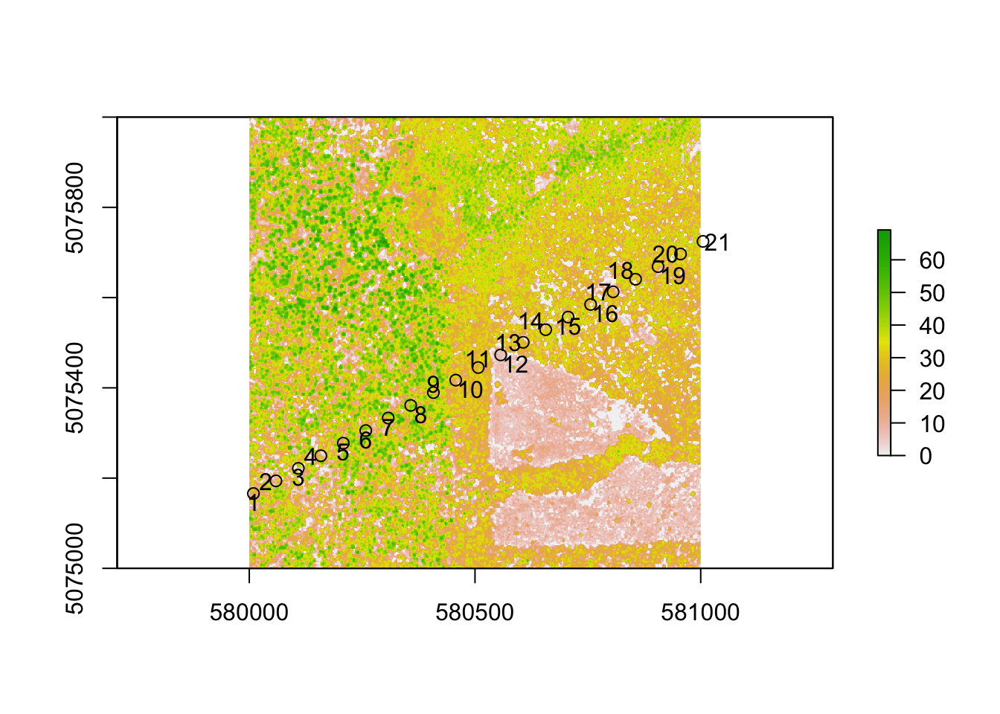

Chapter 5 NEON AOP
5.1 Hyperspectral Remote Sensing
5.1.1 Learning Objectives
After completing this tutorial, you will be able to:
- Define hyperspectral remote sensing.
- Explain the fundamental principles of hyperspectral remote sensing data.
- Describe the key attributes that are required to effectively work with hyperspectral remote sensing data in tools like R or Python.
- Describe what a “band” is.
5.1.1.1 Mapping the Invisible
5.1.2 About Hyperspectral Remote Sensing Data
The electromagnetic spectrum is composed of thousands of bands representing different types of light energy. Imaging spectrometers (instruments that collect hyperspectral data) break the electromagnetic spectrum into groups of bands that support classification of objects by their spectral properties on the earth’s surface. Hyperspectral data consists of many bands – up to hundreds of bands – that cover the electromagnetic spectrum.
The NEON imaging spectrometer collects data within the 380nm to 2510nm portions of the electromagnetic spectrum within bands that are approximately 5nm in width. This results in a hyperspectral data cube that contains approximately 426 bands - which means big, big data.
5.2 Key Metadata for Hyperspectral Data
5.2.1 Bands and Wavelengths
A band represents a group of wavelengths. For example, the wavelength values between 695nm and 700nm might be one band as captured by an imaging spectrometer. The imaging spectrometer collects reflected light energy in a pixel for light in that band. Often when you work with a multi or hyperspectral dataset, the band information is reported as the center wavelength value. This value represents the center point value of the wavelengths represented in that band. Thus in a band spanning 695-700 nm, the center would be 697.5).

Imaging spectrometers collect reflected light information within defined bands or regions of the electromagnetic spectrum. Source: National Ecological Observatory Network (NEON)
5.2.2 Spectral Resolution
The spectral resolution of a dataset that has more than one band, refers to the width of each band in the dataset. In the example above, a band was defined as spanning 695-700nm. The width or spatial resolution of the band is thus 5 nanometers. To see an example of this, check out the band widths for the Landsat sensors.
5.2.3 Full Width Half Max (FWHM)
The full width half max (FWHM) will also often be reported in a multi or hyperspectral dataset. This value represents the spread of the band around that center point.

The Full Width Half Max (FWHM) of a band relates to the distance in nanometers between the band center and the edge of the band. In this case, the FWHM for Band C is 5 nm.
In the illustration above, the band that covers 695-700nm has a FWHM of 5 nm. While a general spectral resolution of the sensor is often provided, not all sensors create bands of uniform widths. For instance bands 1-9 of Landsat 8 are listed below (Courtesy of USGS)
| Band | Wavelength range (microns) | Spatial Resolution (m) | Spectral Width (microns) |
|---|---|---|---|
| Band 1 - Coastal aerosol | 0.43 - 0.45 | 30 | 0.02 |
| Band 2 - Blue | 0.45 - 0.51 | 30 | 0.06 |
| Band 3 - Green | 0.53 - 0.59 | 30 | 0.06 |
| Band 4 - Red | 0.64 - 0.67 | 30 | 0.03 |
| Band 5 - Near Infrared (NIR) | 0.85 - 0.88 | 30 | 0.03 |
| Band 6 - SWIR 1 | 1.57 - 1.65 | 30 | 0.08 |
| Band 7 - SWIR 2 | 2.11 - 2.29 | 30 | 0.18 |
| Band 8 - Panchromatic | 0.50 - 0.68 | 15 | 0.18 |
| Band 9 - Cirrus | 1.36 - 1.38 | 30 | 0.02 |
5.3 Intro to Working with Hyperspectral Remote Sensing Data in HDF5 Format
Contributors: Felipe Sanchez, Leah A. Wasser, Edmund Hart, Donal O’Leary Based on NEON Science Tutorial Series: https://www.neonscience.org/intro-hsi-r-series
In this tutorial, we will explore reading and extracting spatial raster data stored within a HDF5 file using R.
5.3 Learning Objectives
After completing this section, you will be able to:
- Explain how HDF5 data can be used to store spatial data and the associated benefits of this format when working with large spatial data cubes.
- Extract metadata from HDF5 files.
- Slice or subset HDF5 data. You will extract one band of pixels.
- Plot a matrix as an image and a raster.
- Export a final GeoTIFF (spatially projected) that can be used both in further analysis and in common GIS tools like QGIS.
5.3 R Libraries to Install:
- rhdf5:
install.packages("BiocManager"),BiocManager::install("rhdf5") - raster:
install.packages('raster') - rgdal:
install.packages('rgdal')
5.3 Data to Download
Download NEON Teaching Data Subset: Imaging Spectrometer Data - HDF5
These hyperspectral remote sensing data provide information on the National Ecological Observatory Network’s San Joaquin Exerimental Range field site in March of 2019. The data were collected over the San Joaquin field site located in California (Domain 17) and processed at NEON headquarters. This data subset is derived from the mosaic tile named NEON_D17_SJER_DP3_257000_4112000_reflectance.h5. The entire dataset can be accessed by request from the NEON Data Portal.
Remember that the example dataset linked here only has 1 out of every 4 bands included in a full NEON hyperspectral dataset (this substantially reduces the file size!). When we refer to bands in this section, we will note the band numbers for this example dataset, which are different from NEON production data. To convert a band number (b) from this example data subset to the equivalent band in a full NEON hyperspectral file (b’), use the following equation: b’ = 1+4*(b-1).
5.3 About Hyperspectral Remote Sensing Data
The electromagnetic spectrum is composed of thousands of bands representing different types of light energy. Imaging spectrometers (instruments that collect hyperspectral data) break the electromagnetic spectrum into groups of bands that support classification of objects by their spectral properties on the Earth’s surface. Hyperspectral data consists of many bands - up to hundreds of bands - that cover the electromagnetic spectrum.
The NEON imaging spectrometer (NIS) collects data within the 380 nm to 2510 nm portions of the electromagnetic spectrum within bands that are approximately 5 nm in width. This results in a hyperspectral data cube that contains approximately 428 bands - which means BIG DATA. Remember that the example dataset used here only has 1 out of every 4 bands included in a full NEON hyperspectral dataset (this substantially reduces size!). When we refer to bands in this tutorial, we will note the band numbers for this example dataset, which may be different from NEON production data.

A data cube of NEON hyperspectral data. Each layer in the cube represents a band.
The HDF5 data model natively compresses data stored within it (makes it smaller) and supports data slicing (extracting only the portions of the data that you need to work with rather than reading the entire dataset into memory). These features in addition to the ability to support spatial data and associated metadata make it ideal for working with large data cubes such as those generated by imaging spectrometers.
In this section we will explore reading and extracting spatial raster data stored within a HDF5 file using R.
5.3 Read HDF5 data into R
We will use the raster and rhdf5 packages to read in the HDF5 file that
contains hyperspectral data for the
NEON San Joaquin (SJER) field site.
Let’s start by calling the needed packages and reading in our NEON HDF5 file.
Please be sure that you have at least version 2.10 of rhdf5 installed. Use:
packageVersion("rhdf5") to check the package version.
## Loading required package: sp## rgdal: version: 1.5-16, (SVN revision 1050)
## Geospatial Data Abstraction Library extensions to R successfully loaded
## Loaded GDAL runtime: GDAL 2.4.2, released 2019/06/28
## Path to GDAL shared files: /Library/Frameworks/R.framework/Versions/3.6/Resources/library/rgdal/gdal
## GDAL binary built with GEOS: FALSE
## Loaded PROJ runtime: Rel. 5.2.0, September 15th, 2018, [PJ_VERSION: 520]
## Path to PROJ shared files: /Library/Frameworks/R.framework/Versions/3.6/Resources/library/rgdal/proj
## Linking to sp version:1.4-2
## Overwritten PROJ_LIB was /Library/Frameworks/R.framework/Versions/3.6/Resources/library/rgdal/proj# Define the file name to be opened
f <- ('./data/AOP/NEON_hyperspectral_tutorial_example_subset.h5') Data Tip: To update all packages installed in
R, use update.packages().
When you look at the structure of the data, take note of the “map info” dataset, the “Coordinate_System” group, and the “wavelength” and “Reflectance” datasets. The “Coordinate_System” folder contains the spatial attributes of the data including its EPSG Code, which is easily converted to a Coordinate Reference System (CRS). The CRS documents how the data are physically located on the Earth. The “wavelength” dataset contains the middle wavelength values for each band in the data. The “Reflectance” dataset contains the image data that we will use for both data processing and visualization.
More Information on raster metadata:
- Raster Data in R
The Basics - this tutorial explains more about how rasters work in R and their associated metadata.
About Hyperspectral Remote Sensing Data -this tutorial explains more about metadata and important concepts associated with multi-band (multi and hyperspectral) rasters.
Data Tip - HDF5 Structure: Note that the structure of individual HDF5 files may vary depending on who produced the data. In this case, the Wavelength and reflectance data within the file are both datasets. However, the spatial information is contained within a group. Data downloaded from another organization like NASA, may look different. This is why it’s important to explore the data before diving into using it!
We can use the h5readAttributes() function to read and extract metadata from the
HDF5 file. Let’s start by learning about the wavelengths described within this file.
# get information about the wavelengths of this dataset
wavelengthInfo <- h5readAttributes(f,"/SJER/Reflectance/Metadata/Spectral_Data/Wavelength")
wavelengthInfo## $Description
## [1] "Central wavelength of the reflectance bands."
##
## $Units
## [1] "nanometers"Next, we can use the h5read function to read the data contained within the
HDF5 file. Let’s read in the wavelengths of the band centers:
# read in the wavelength information from the HDF5 file
wavelengths <- h5read(f,"/SJER/Reflectance/Metadata/Spectral_Data/Wavelength")
head(wavelengths)## [1] 381.5437 401.5756 421.6075 441.6394 461.6713 481.7032## [1] 2404.764 2424.796 2444.828 2464.860 2484.892 2504.924Which wavelength is band 6 associated with?
(Hint: look at the wavelengths
vector that we just imported and check out the data located at index 6 -
wavelengths[6]).

482 nanometers falls within the blue portion of the electromagnetic spectrum. Source: National Ecological Observatory Network
Band 6 has a associate wavelength center of 481.7032 nanometers (nm) which is in the blue portion of the visible electromagnetic spectrum (~ 400-700 nm).
5.3 Bands and Wavelengths
A band represents a group of wavelengths. For example, the wavelength values between 695 nm and 700 nm might be one band as captured by an imaging spectrometer. The imaging spectrometer collects reflected light energy in a pixel for light in that band. Often when you work with a multi or hyperspectral dataset, the band information is reported as the center wavelength value. This value represents the center point value of the wavelengths represented in that band. Thus in a band spanning 695-700 nm, the center would be 697.5 nm). The full width half max (FWHM) will also be reported. This value represents the spread of the band around that center point. So, a band that covers 800 nm-805 nm might have a FWHM of 5 nm and a wavelength value of 802.5 nm.
Bands represent a range of values (types of light) within the electromagnetic spectrum. Values for each band are often represented as the center point value of each band. Source: National Ecological Observatory Network (NEON)
The HDF5 dataset that we are working with in this activity may contain more information than we need to work with. For example, we don’t necessarily need to process all 107 bands available in this example dataset (or all 426 bands available in a full NEON hyperspectral reflectance file, for that matter) - if we are interested in creating a product like NDVI which only uses bands in the near infra-red and red portions of the spectrum. Or we might only be interested in a spatial subset of the data - perhaps a region where we have plots in the field.
The HDF5 format allows us to slice (or subset) the data - quickly extracting the subset that we need to process. Let’s extract one of the green bands in our dataset - band 9.
By the way - what is the center wavelength value associated with band 9?
Hint: wavelengths[9].
How do we know this band is a green band in the visible portion of the spectrum?
In order to effectively subset our data, let’s first read the important reflectance metadata stored as attributes in the “Reflectance_Data” dataset.
# First, we need to extract the reflectance metadata:
reflInfo <- h5readAttributes(f, "/SJER/Reflectance/Reflectance_Data")
reflInfo## $Cloud_conditions
## [1] "For cloud conditions information see Weather Quality Index dataset."
##
## $Cloud_type
## [1] "Cloud type may have been selected from multiple flight trajectories."
##
## $Data_Ignore_Value
## [1] -9999
##
## $Description
## [1] "Atmospherically corrected reflectance."
##
## $Dimension_Labels
## [1] "Line, Sample, Wavelength"
##
## $Dimensions
## [1] 500 500 107
##
## $Interleave
## [1] "BSQ"
##
## $Scale_Factor
## [1] 10000
##
## $Spatial_Extent_meters
## [1] 257500 258000 4112500 4113000
##
## $Spatial_Resolution_X_Y
## [1] 1 1
##
## $Units
## [1] "Unitless."
##
## $Units_Valid_range
## [1] 0 10000
##
## $dim
## [1] 107 500 500# Next, we read the different dimensions
nRows <- reflInfo$Dimensions[1]
nCols <- reflInfo$Dimensions[2]
nBands <- reflInfo$Dimensions[3]
nRows## [1] 500## [1] 500## [1] 107The HDF5 read function reads data in the order: Bands, Cols, Rows. This is different from how R reads data. We’ll adjust for this later.
# Extract or "slice" data for band 9 from the HDF5 file
b9 <- h5read(f,"/SJER/Reflectance/Reflectance_Data",index=list(9,1:nCols,1:nRows))
# what type of object is b9?
class(b9)## [1] "array"5.3 A Note About Data Slicing in HDF5
Data slicing allows us to extract and work with subsets of the data rather than reading in the entire dataset into memory. Thus, in this case, we can extract and plot the green band without reading in all 107 bands of information. The ability to slice large datasets makes HDF5 ideal for working with big data.
Next, let’s convert our data from an array (more than 2 dimensions) to a matrix (just 2 dimensions). We need to have our data in a matrix format to plot it.
## [1] "matrix"5.3 Arrays vs. Matrices
Arrays are matrices with more than 2 dimensions. When we say dimension, we are talking about the “z” associated with the data (imagine a series of tabs in a spreadsheet). Put the other way: matrices are arrays with only 2 dimensions. Arrays can have any number of dimensions one, two, ten or more.
Here is a matrix that is 4 x 3 in size (4 rows and 3 columns):
| Metric | species 1 | species 2 |
|---|---|---|
| total number | 23 | 45 |
| average weight | 14 | 5 |
| average length | 2.4 | 3.5 |
| average height | 32 | 12 |
5.3 Dimensions in Arrays
An array contains 1 or more dimensions in the “z” direction. For example, let’s say that we collected the same set of species data for every day in a 30 day month. We might then have a matrix like the one above for each day for a total of 30 days making a 4 x 3 x 30 array (this dataset has more than 2 dimensions). More on R object types here (links to external site, DataCamp).

A matrix has only 2 dimensions

An array has more than 2 dimensions.
Next, let’s look at the metadata for the reflectance data. When we do this, take note of 1) the scale factor and 2) the data ignore value. Then we can plot the band 9 data. Plotting spatial data as a visual “data check” is a good idea to make sure processing is being performed correctly and all is well with the image.
# look at the metadata for the reflectance dataset
h5readAttributes(f,"/SJER/Reflectance/Reflectance_Data")## $Cloud_conditions
## [1] "For cloud conditions information see Weather Quality Index dataset."
##
## $Cloud_type
## [1] "Cloud type may have been selected from multiple flight trajectories."
##
## $Data_Ignore_Value
## [1] -9999
##
## $Description
## [1] "Atmospherically corrected reflectance."
##
## $Dimension_Labels
## [1] "Line, Sample, Wavelength"
##
## $Dimensions
## [1] 500 500 107
##
## $Interleave
## [1] "BSQ"
##
## $Scale_Factor
## [1] 10000
##
## $Spatial_Extent_meters
## [1] 257500 258000 4112500 4113000
##
## $Spatial_Resolution_X_Y
## [1] 1 1
##
## $Units
## [1] "Unitless."
##
## $Units_Valid_range
## [1] 0 10000
##
## $dim
## [1] 107 500 500Figure 5.1: Plot of reflectance values for band 9 data. This plot shows a very washed out image lacking any detail.
That is hard to visually interpret. What happens if we plot a log of the data?

What do you notice about the first image? It’s washed out and lacking any detail. What could be causing this? It got better when plotting the log of the values, but still not great.
Let’s look at the distribution of reflectance values in our data to figure out what is going on.
# Plot range of reflectance values as a histogram to view range
# and distribution of values.
hist(b9,breaks=40,col="darkmagenta")Figure 5.2: Histogram of reflectance values for band 9. The x-axis represents the reflectance values and ranges from 0 to 8000. The frequency of these values is on the y-axis. The histogram shows reflectance values are skewed to the right, where the majority of the values lie between 0 and 1000. We can conclude that reflectance values are not equally distributed across the range of reflectance values, resulting in a washed out image.
Figure 5.3: Histogram of reflectance values between 0 and 5000 for band 9. Reflectance values are on the x-axis, and the frequency is on the y-axis. The x-axis limit has been set 5000 in order to better visualize the distribution of reflectance values. We can confirm that the majority of the values are indeed within the 0 to 4000 range.
Figure 5.4: Histogram of reflectance values between 5000 and 15000 for band 9. Reflectance values are on the x-axis, and the frequency is on the y-axis. Plot shows that a very few number of pixels have reflectance values larger than 5,000. These values are skewing how the image is being rendered and heavily impacting the way the image is drawn on our monitor.
As you’re examining the histograms above, keep in mind that reflectance values range between 0-1. The data scale factor in the metadata tells us to divide all reflectance values by 10,000. Thus, a value of 5,000 equates to a reflectance value of 0.50. Storing data as integers (without decimal places) compared to floating points (with decimal places) creates a smaller file. You will see this done often when working with remote sensing data.
Notice in the data that there are some larger reflectance values (>5,000) that represent a smaller number of pixels. These pixels are skewing how the image renders.
5.3 Data Ignore Value
Image data in raster format will often contain a data ignore value and a scale factor. The data ignore value represents pixels where there are no data. Among other causes, no data values may be attributed to the sensor not collecting data in that area of the image or to processing results which yield null values.
Remember that the metadata for the Reflectance dataset designated -9999 as
data ignore value. Thus, let’s set all pixels with a value == -9999 to NA
(no value). If we do this, R won’t try to render these pixels.
# there is a no data value in our raster - let's define it
myNoDataValue <- as.numeric(reflInfo$Data_Ignore_Value)
myNoDataValue## [1] -9999
Figure 5.5: Plot of reflectance values for band 9 data with values equal to -9999 set to NA. Image data in raster format will often contain no data values, which may be attributed to the sensor not collecting data in that area of the image or to processing results which yield null values. Reflectance datasets designate -9999 as data ignore values. As such, we will reassign -9999 values to NA so R won’t try to render these pixels.
5.3 Reflectance Values and Image Stretch
Our image still looks dark because R is trying to render all reflectance values between 0 and 14999 as if they were distributed equally in the histogram. However we know they are not distributed equally. There are many more values between 0-5000 then there are values >5000.
Images have a distribution of reflectance values. A typical image viewing program
will render the values by distributing the entire range of reflectance values
across a range of “shades” that the monitor can render - between 0 and 255.
However, often the distribution of reflectance values is not linear. For example,
in the case of our data, most of the reflectance values fall between 0 and 0.5.
Yet there are a few values >0.8 that are heavily impacting the way the image is
drawn on our monitor. Imaging processing programs like ENVI, QGIS and ArcGIS (and
even Adobe Photoshop) allow you to adjust the stretch of the image. This is similar
to adjusting the contrast and brightness in Photoshop.
The proper way to adjust our data would be
what’s called an image stretch. We will learn how to stretch our image data,
later. For now, let’s plot the values as the log function on the pixel
reflectance values to factor out those larger values.

Figure 5.6: Plot of log transformed reflectance values for the previous b9 image. Applying the log to the image increases the contrast making it look more like an image by factoring out those larger values. While an improvement, the image is still far from great. The proper way to adjust an image is by doing whats called an image stretch.
The log applied to our image increases the contrast making it look more like an image. However, look at the images below. The top one is what our log adjusted image looks like when plotted. The bottom on is an RGB version of the same image. Notice a difference?

![Plot of log transformed reflectance values for the b9 image previously plotted. Applying the log to the image increases the contrast making it look more like an image by factoring out those larger values. While an improvement, the image is still far from great. The proper way to adjust an image is by doing whats called an image stretch. The log transformed image appears flipped because when R reads in the dataset, it reads them as: Columns x Bands x Rows, as opposed to the RGB image on the left which has dimensions as Bands x Rows x Columns.](https://raw.githubusercontent.com/NEONScience/NEON-Data-Skills/dev-aten/graphics/hyperspectral-general/SJER_Flipped.png)
5.3 Transpose Image
Notice that there are three data dimensions for this file: Bands x Rows x
Columns. However, when R reads in the dataset, it reads them as: Columns x
Bands x Rows. The data are flipped. We can quickly transpose the data to correct
for this using the t or transpose command in R.
The orientation is rotated in our log adjusted image. This is because R reads in matrices starting from the upper left hand corner. Whereas, most rasters read pixels starting from the lower left hand corner. In the next section, we will deal with this issue by creating a proper georeferenced (spatially located) raster in R. The raster format will read in pixels following the same methods as other GIS and imaging processing software like QGIS and ENVI do.
# We need to transpose x and y values in order for our
# final image to plot properly
b9 <- t(b9)
image(log(b9), main="Transposed Image")Figure 5.7: Plot showing the transposed image of the log transformed reflectance values of b9. The orientation of the image is rotated in our log transformed image, because R reads in the matrices starting from the upper left hand corner.
5.3 Create a Georeferenced Raster
Next, we will create a proper raster using the b9 matrix. The raster
format will allow us to define and manage:
- Image stretch
- Coordinate reference system & spatial reference
- Resolution
- and other raster attributes…
It will also account for the orientation issue discussed above.
To create a raster in R, we need a few pieces of information, including:
- The coordinate reference system (CRS)
- The spatial extent of the image
5.3 Define Raster CRS
First, we need to define the Coordinate reference system (CRS) of the raster. To do that, we can first grab the EPSG code from the HDF5 attributes, and covert the EPSG to a CRS string. Then we can assign that CRS to the raster object.
# Extract the EPSG from the h5 dataset
myEPSG <- h5read(f, "/SJER/Reflectance/Metadata/Coordinate_System/EPSG Code")
# convert the EPSG code to a CRS string
myCRS <- crs(paste0("+init=epsg:",myEPSG))
# define final raster with projection info
# note that capitalization will throw errors on a MAC.
# if UTM is all caps it might cause an error!
b9r <- raster(b9,
crs=myCRS)
# view the raster attributes
b9r## class : RasterLayer
## dimensions : 500, 500, 250000 (nrow, ncol, ncell)
## resolution : 0.002, 0.002 (x, y)
## extent : 0, 1, 0, 1 (xmin, xmax, ymin, ymax)
## crs : +init=epsg:32611 +proj=utm +zone=11 +datum=WGS84 +units=m +no_defs +ellps=WGS84 +towgs84=0,0,0
## source : memory
## names : layer
## values : 0, 9210 (min, max)# let's have a look at our properly oriented raster. Take note of the
# coordinates on the x and y axis.
image(log(b9r),
xlab = "UTM Easting",
ylab = "UTM Northing",
main = "Properly Oriented Raster")Figure 5.8: Plot of the properly oriented raster image of the band 9 data. In order to orient the image correctly, the coordinate reference system was defined and assigned to the raster object. X-axis represents the UTM Easting values, and the Y-axis represents the Northing values.
Next we define the extents of our raster. The extents will be used to calculate
the raster’s resolution. Fortunately, the spatial extent is provided in the
HDF5 file “Reflectance_Data” group attributes that we saved before as reflInfo.
# Grab the UTM coordinates of the spatial extent
xMin <- reflInfo$Spatial_Extent_meters[1]
xMax <- reflInfo$Spatial_Extent_meters[2]
yMin <- reflInfo$Spatial_Extent_meters[3]
yMax <- reflInfo$Spatial_Extent_meters[4]
# define the extent (left, right, top, bottom)
rasExt <- extent(xMin,xMax,yMin,yMax)
rasExt## class : Extent
## xmin : 257500
## xmax : 258000
## ymin : 4112500
## ymax : 4113000## class : RasterLayer
## dimensions : 500, 500, 250000 (nrow, ncol, ncell)
## resolution : 1, 1 (x, y)
## extent : 257500, 258000, 4112500, 4113000 (xmin, xmax, ymin, ymax)
## crs : +init=epsg:32611 +proj=utm +zone=11 +datum=WGS84 +units=m +no_defs +ellps=WGS84 +towgs84=0,0,0
## source : memory
## names : layer
## values : 0, 9210 (min, max)
The extent of a raster represents the spatial location of each corner. The coordinate units will be determined by the spatial projection/ coordinate reference system that the data are in. Source: National Ecological Observatory Network (NEON)
Learn more about raster attributes including extent, and coordinate reference systems here.
We can adjust the colors of our raster too if we want.
# let's change the colors of our raster and adjust the zlims
col <- terrain.colors(25)
image(b9r,
xlab = "UTM Easting",
ylab = "UTM Northing",
main= "Raster w Custom Colors",
col=col,
zlim=c(0,3000))Figure 5.9: Plot of the properly oriented raster image of B9 with custom colors. We can adjust the colors of the image by adjusting the z limits, which in this case makes the highly reflective surfaces more vibrant. This color adjustment is more apparent in the bottom left of the image, where the parking lot, buildings and bare surfaces are located. X-axis represents the UTM Easting values, and the Y-axis represents the Northing values.
We’ve now created a raster from band 9 reflectance data. We can export the data
as a raster, using the writeRaster command.
# write out the raster as a geotiff
writeRaster(b9r,
file=paste0(wd,"band9.tif"),
format="GTiff",
overwrite=TRUE)
# It's always good practice to close the H5 connection before moving on!
# close the H5 file
H5close()5.3 Challenge: Work with Rasters
Try these three extensions on your own:
Create rasters using other bands in the dataset.
Vary the distribution of values in the image to mimic an image stretch. e.g.
b9[b9 > 6000 ] <- 6000Use what you know to extract ALL of the reflectance values for ONE pixel rather than for an entire band. HINT: this will require you to pick an x and y value and then all values in the z dimension:
aPixel<- h5read(f,"Reflectance",index=list(NULL,100,35)). Plot the spectra output.
5.3 Calculating Forest Structural Diversity Metrics from NEON LiDAR Data
Contributors: Jeff Atkins, Keith Krause, Atticus Stovall Authors: Elizabeth LaRue, Donal O’Leary
5.3 Learning Objectives
After completing this tutorial, you will be able to:
- Read a NEON LiDAR file (laz) into R
- Visualize a spatial subset of the LiDAR tile
- Correct a spatial subset of the LiDAR tile for topographic varation
- Calculate 13 structural diversity metrics described in LaRue, Wagner, et al. (2020)
5.3 R Libraries to Install:
- lidR:
install.packages('lidR') - gstat:
install.packages('gstat')
Important Note:
If you have R version 3.6 or above you’ll need to update data.table:
data.table::update.dev.pkg()5.3 Data to Download
For this tutorial, we will be using two .laz files containing NEON AOP point clouds for 1km tiles from the Harvard Forest (HARV) and Lower Teakettle (TEAK) sites.
Link to download .laz files on Google Drive Here.
5.3 Recommended Skills
For this tutorial, you should have an understanding of Light Detection And Ranging (LiDAR) technology, specifically how discrete return lidar data are collected and represented in las/laz files. For more information on how lidar works, please see NEON’s Introduction to Lidar Tutorial Series.
5.4 Introduction to Structural Diversity Metrics
Forest structure influences many important ecological processes, including biogeochemical cycling, wildfires, species richness and diversity, and many others. Quantifying forest structure, hereafter referred to as “structural diversity,” presents a challenge for many reasons, including difficulty in measuring individual trees, limbs, and leaves across large areas. In order to overcome this challenge, today’s researchers use Light Detection And Ranging (LiDAR) technology to measure large areas of forest. It is also challenging to calculate meaningful summary metrics of a forest’s structure that 1) are ecologically relevant and 2) can be used to compare different forested locations. In this tutorial, you will be introduced to a few tools that will help you to explore and quantify forest structure using LiDAR data collected at two field sites of the National Ecological Observatory Network.
5.5 NEON AOP Discrete Return LIDAR
The NEON Airborne Observation Platform (AOP) . has several sensors including discrete-return LiDAR, which is useful for measuring forest structural diversity that can be summarized into four categories of metrics: (1) canopy height, (2) canopy cover and openness, and (3) canopy heterogeneity (internal and external), and (4) vegetation area.
We will be comparing the structural diversity of two NEON sites that vary in their structural characteristics.
First, we will look at Harvard Forest (HARV), which is located in Massachusetts. It is a lower elevation, mixed deciduous and evergreen forest dominated by Quercus rubra, Acer rubrum, and Aralia nudicaulis.
Second, we will look at Lower Teakettle (TEAK), which is a high elevation forested NEON site in California. TEAK is an evergreen forest dominated by Abies magnifica, Abies concolor, Pinus jeffreyi, and Pinus contorta.
As you can imagine, these two forest types will have both similarities and differences in their structural attributes. We can quantify these attributes by calculating several different structural diversity metrics, and comparing the results.
5.5.1 Loading the LIDAR Products
To begin, we first need to load our required R packages, and set our working directory to the location where we saved the input LiDAR .laz files that can be downloaded from the NEON Data Portal.
##
## Attaching package: 'data.table'## The following object is masked from 'package:raster':
##
## shiftNext, we will read in the LiDAR data using the lidR::readLAS() function.
Note that this function can read in both .las and .laz file formats.
# Read in LiDAR data
#2017 1 km2 tile .laz file type for HARV and TEAK
#Watch out for outlier Z points - this function also allows for the
#ability to filter outlier points well above or below the landscape
#(-drop_z_blow and -drop_z_above). See how we have done this here
#for you.
HARV <- lidR::readLAS('/Users/kdw223/Research/katharynduffy.github.io/data/NEON_D01_HARV_DP1_727000_4702000_classified_point_cloud_colorized.laz',filter = "-drop_z_below 150 -drop_z_above 325")
TEAK <- lidR::readLAS('/Users/kdw223/Research/katharynduffy.github.io/data/NEON_D17_TEAK_DP1_316000_4091000_classified_point_cloud_colorized.laz',filter = "-drop_z_below 1694 -drop_z_above 2500")Let’s check out:
- the extent,
- coordinate system,
- and a 3D plot of each .laz file.
Note that on Mac computers you may need to install XQuartz for 3D plots - see xquartz.org
class : LAS (v1.3 format 3)
memory : 521.6 Mb
extent : 727000, 728000, 4702000, 4703000 (xmin, xmax, ymin, ymax)
coord. ref. : +proj=utm +zone=18 +datum=WGS84 +units=m +no_defs +ellps=WGS84 +towgs84=0,0,0
area : 1 km²
points : 5.94 million points
density : 5.94 points/m²
File signature: LASF�
File source ID: 211
Global encoding:
- GPS Time Type: GPS Week Time
- Synthetic Return Numbers: no
- Well Know Text: CRS is GeoTIFF
- Aggregate Model: false
Project ID - GUID: 00000000-0000-0000-0000-000000000000
Version: 1.3
System identifier: LAStools (c) by rapidlasso GmbH
Generating software: lascolor (190812) commercial
File creation d/y: 278/2019
header size: 235
Offset to point data: 329
Num. var. length record: 1
Point data format: 3
Point data record length: 34
Num. of point records: 5944282
Num. of points by return: 4581566 1255117 104991 2608 0
Scale factor X Y Z: 0.01 0.01 0.01
Offset X Y Z: 7e+05 4700000 0
min X Y Z: 727000 4702000 223.2
max X Y Z: 728000 4703000 324.99
Variable length records:
Variable length record 1 of 1
Description:
Tags:
Key 1024 value 1
Key 1025 value 2
Key 3072 value 32618
Key 4099 value 9001 
1 km-squared point cloud from Harvard Forest showing a gentle slope covered in a continuous canopy of mixed forest.
class : LAS (v1.3 format 3)
memory : 439.2 Mb
extent : 316000, 317000, 4091231, 4092000 (xmin, xmax, ymin, ymax)
coord. ref. : +proj=utm +zone=11 +datum=WGS84 +units=m +no_defs +ellps=WGS84 +towgs84=0,0,0
area : 0.75 km²
points : 5.01 million points
density : 6.7 points/m²
File signature: LASF�
File source ID: 211
Global encoding:
- GPS Time Type: GPS Week Time
- Synthetic Return Numbers: no
- Well Know Text: CRS is GeoTIFF
- Aggregate Model: false
Project ID - GUID: 00000000-0000-0000-0000-000000000000
Version: 1.3
System identifier: LAStools (c) by rapidlasso GmbH
Generating software: lascolor (190812) commercial
File creation d/y: 206/2019
header size: 235
Offset to point data: 329
Num. var. length record: 1
Point data format: 3
Point data record length: 34
Num. of point records: 5006002
Num. of points by return: 3315380 1182992 416154 91476 0
Scale factor X Y Z: 0.01 0.01 0.01
Offset X Y Z: 3e+05 4e+06 0
min X Y Z: 316000 4091231 2117.03
max X Y Z: 317000 4092000 2376.98
Variable length records:
Variable length record 1 of 1
Description:
Tags:
Key 1024 value 1
Key 1025 value 2
Key 3072 value 32611
Key 4099 value 9001
1 km-squared point cloud from Lower Teakettle showing mountainous terrain covered in a patchy conifer forest, with tall, skinny conifers clearly visible emerging from the discontinuous canopy.
5.5.2 Normalizing Tree Height to Ground
To begin, we will take a look at the structural diversity of the dense mixed deciduous/evergreen
forest of HARV. We’re going to choose a 40 x 40 m spatial extent for our analysis, but first we
need to normalize the height values of this LiDAR point cloud from an absolute elevation
above mean sea level to height above the ground using the lidR::lasnormalize() function.
This function relies on spatial interpolation, and therefore we want to perform this step on an area that is quite a bit larger than our area of interest to avoid edge effects.
To be safe, we will clip out an area of 200 x 200 m, normalize it, and then clip out our smaller area of interest.
# Correct for elevation
#We're going to choose a 40 x 40 m spatial extent, which is the
#extent for NEON base plots.
#First set the center of where you want the plot to be (note easting
#and northing works in units of m because these data are in a UTM
#proejction as shown in the summary above).
x <- 727500 #easting
y <- 4702500 #northing
#Cut out a 200 x 200 m buffer by adding 100 m to easting and
#northing coordinates (x,y).
data.200m <-
lasclipRectangle(HARV,
xleft = (x - 100), ybottom = (y - 100),
xright = (x + 100), ytop = (y + 100))
#Correct for ground height using a kriging function to interpolate
#elevation from ground points in the .laz file.
#If the function will not run, then you may need to checkfor outliers
#by adjusting the 'drop_z_' arguments when reading in the .laz files.
dtm <- grid_terrain(data.200m, 1, kriging(k = 10L))
data.200m <- lasnormalize(data.200m, dtm)
#Will often give a warning if not all points could be corrected,
#but visually check to see if it corrected for ground height.
lidR::plot(data.200m)
#There's only a few uncorrected points and we'll fix these in
#the next step.
#Clip 20 m out from each side of the easting and northing
#coordinates (x,y).
data.40m <-
lasclipRectangle(data.200m,
xleft = (x - 20), ybottom = (y - 20),
xright = (x + 20), ytop = (y + 20))
data.40m@data$Z[data.40m@data$Z <= .5] <- NA
#This line filters out all z_vals below .5 m as we are less
#interested in shrubs/trees.
#You could change it to zero or another height depending on interests.
#visualize the clipped plot point cloud
lidR::plot(data.40m) 
40 meter by 40 meter point cloud from Harvard Forest showing a cross-section of the forest structure with a complex canopy- and sub-canopy structure with many rounded crowns, characteristic of a deciduous-dominated section of forest.
5.6 Calculating Structural Diversity Metrics
Now that we have our area of interest normalized and clipped, we can proceed with calculating our structural diversity metrics.
5.6.1 GENERATE CANOPY HEIGHT MODEL (CHM)
(i.e. a 1 m2 raster grid of vegetations heights)
# Structural diversity metrics
#res argument specifies pixel size in meters and dsmtin is
#for raster interpolation
chm <- grid_canopy(data.40m, res = 1, dsmtin())
#visualize CHM
lidR::plot(chm) 5.6.1.1 MEAN OUTER CANOPY HEIGHT (MOCH)
5.6.1.2 MAX CANOPY HEIGHT
5.6.1.3 RUMPLE
5.6.1.4 TOP RUGOSITY
5.6.1.5 DEEP GAPS & DEEP GAP FRACTION
#number of cells in raster (also area in m2)
cells <- length(chm@data@values)
chm.0 <- chm
chm.0[is.na(chm.0)] <- 0 #replace NAs with zeros in CHM
#create variable for the number of deep gaps, 1 m^2 canopy gaps
zeros <- which(chm.0@data@values == 0)
deepgaps <- length(zeros) #number of deep gaps
#deep gap fraction, the number of deep gaps in the chm relative
#to total number of chm pixels
deepgap.fraction <- deepgaps/cells 5.6.1.6 COVER FRACTION
5.6.1.7 HEIGHT SD
The standard deviation of height values for all points in the plot point cloud
#height SD, the standard deviation of height values for all points
#in the plot point cloud
vert.sd <- cloud_metrics(data.40m, sd(Z, na.rm = TRUE))
#SD of VERTICAL SD of HEIGHT
#rasterize plot point cloud and calculate the standard deviation
#of height values at a resolution of 1 m^2
sd.1m2 <- grid_metrics(data.40m, sd(Z), 1)
#standard deviation of the calculated standard deviations
#from previous line
#This is a measure of internal and external canopy complexity
sd.sd <- sd(sd.1m2[,3], na.rm = TRUE)
#some of the next few functions won't handle NAs, so we need
#to filter these out of a vector of Z points
Zs <- data.40m@data$Z
Zs <- Zs[!is.na(Zs)]5.6.1.8 ENTROPY
Quantifies diversity & evenness of point cloud heights
5.6.1.9 GAP FRACTION PROFILE
Gap fraction profile, assesses the distribution of gaps in the canopy volume
#dz = 1 partitions point cloud in 1 m horizontal slices
#z0 is set to a reasonable height based on the age and height of
#the study sites
gap_frac <- gap_fraction_profile(Zs, dz = 1, z0=3)
#defines gap fraction profile as the average gap fraction in each
#1 m horizontal slice assessed in the previous line
GFP.AOP <- mean(gap_frac$gf) 5.6.1.10 VAI
Leaf area density, assesses leaf area in the canopy volume
#k = 0.5 is a standard extinction coefficient for foliage
#dz = 1 partitions point cloud in 1 m horizontal slices
#z0 is set to the same height as gap fraction profile above
LADen<-LAD(Zs, dz = 1, k=0.5, z0=3)
#vegetation area index, sum of leaf area density values for
#all horizontal slices assessed in previous line
VAI.AOP <- sum(LADen$lad, na.rm=TRUE) 5.6.1.11 VCI
A vertical complexity index, fixed normalization of entropy metric calculated above
#set zmax comofortably above maximum canopy height
#by = 1 assesses the metric based on 1 m horizontal slices in
#the canopy
VCI.AOP <- VCI(Zs, by = 1, zmax=100) We now have 13 different structural diversity metrics. Let’s organize them into a new dataframe:
#OUTPUT CALCULATED METRICS INTO A TABLE
#creates a dataframe row, out.plot, containing plot descriptors
#and calculated metrics
HARV_structural_diversity <-
data.frame(matrix(c(x, y, mean.max.canopy.ht, max.canopy.ht,
rumple, deepgaps,deepgap.fraction,
cover.fraction,top.rugosity, vert.sd,
sd.sd, entro,GFP.AOP, VAI.AOP, VCI.AOP),
ncol = 15))
#provide descriptive names for the calculated metrics
colnames(HARV_structural_diversity) <-
c("easting", "northing", "mean.max.canopy.ht.aop",
"max.canopy.ht.aop", "rumple.aop", "deepgaps.aop",
"deepgap.fraction.aop","cover.fraction.aop",
"top.rugosity.aop", "vert.sd.aop", "sd.sd.aop",
"entropy.aop", "GFP.AOP.aop", "VAI.AOP.aop", "VCI.AOP.aop")
#View the results
HARV_structural_diversity 5.6.2 Combining Everything Into One Function
Now that we have run through how to measure each structural diversity metric, let’s create a convenient function to run these a little faster on the TEAK site for a comparison of structural diversity with HARV.
#Let's correct for elevation and measure structural diversity for TEAK
x <- 316400
y <- 4091700
data.200m <- lasclipRectangle(TEAK,
xleft = (x - 100), ybottom = (y - 100),
xright = (x + 100), ytop = (y + 100))
dtm <- grid_terrain(data.200m, 1, kriging(k = 10L))
data.200m <- lasnormalize(data.200m, dtm)
data.40m <- lasclipRectangle(data.200m,
xleft = (x - 20), ybottom = (y - 20),
xright = (x + 20), ytop = (y + 20))
data.40m@data$Z[data.40m@data$Z <= .5] <- 0
plot(data.40m)
40 meter by 40 meter point cloud from Lower Teakettle showing a cross-section of the forest structure with several tall, pointed conifers separated by deep gaps in the canopy.
#Zip up all the code we previously used and write function to
#run all 13 metrics in a single function.
structural_diversity_metrics <- function(data.40m) {
chm <- grid_canopy(data.40m, res = 1, dsmtin())
mean.max.canopy.ht <- mean(chm@data@values, na.rm = TRUE)
max.canopy.ht <- max(chm@data@values, na.rm=TRUE)
rumple <- rumple_index(chm)
top.rugosity <- sd(chm@data@values, na.rm = TRUE)
cells <- length(chm@data@values)
chm.0 <- chm
chm.0[is.na(chm.0)] <- 0
zeros <- which(chm.0@data@values == 0)
deepgaps <- length(zeros)
deepgap.fraction <- deepgaps/cells
cover.fraction <- 1 - deepgap.fraction
vert.sd <- cloud_metrics(data.40m, sd(Z, na.rm = TRUE))
sd.1m2 <- grid_metrics(data.40m, sd(Z), 1)
sd.sd <- sd(sd.1m2[,3], na.rm = TRUE)
Zs <- data.40m@data$Z
Zs <- Zs[!is.na(Zs)]
entro <- entropy(Zs, by = 1)
gap_frac <- gap_fraction_profile(Zs, dz = 1, z0=3)
GFP.AOP <- mean(gap_frac$gf)
LADen<-LAD(Zs, dz = 1, k=0.5, z0=3)
VAI.AOP <- sum(LADen$lad, na.rm=TRUE)
VCI.AOP <- VCI(Zs, by = 1, zmax=100)
out.plot <- data.frame(
matrix(c(x, y, mean.max.canopy.ht,max.canopy.ht,
rumple,deepgaps, deepgap.fraction,
cover.fraction, top.rugosity, vert.sd,
sd.sd, entro, GFP.AOP, VAI.AOP,VCI.AOP),
ncol = 15))
colnames(out.plot) <-
c("easting", "northing", "mean.max.canopy.ht.aop",
"max.canopy.ht.aop", "rumple.aop", "deepgaps.aop",
"deepgap.fraction.aop", "cover.fraction.aop",
"top.rugosity.aop","vert.sd.aop","sd.sd.aop",
"entropy.aop", "GFP.AOP.aop",
"VAI.AOP.aop", "VCI.AOP.aop")
print(out.plot)
}
TEAK_structural_diversity <- structural_diversity_metrics(data.40m)5.6.3 Comparing Metrics Between Forests
How does the structural diversity of the evergreen TEAK forest compare to the mixed deciduous/evergreen forest from HARV? Let’s combine the result data.frames for a direct comparison:
5.7 Matching GEDI waveforms with NEON AOP LiDAR pointclouds
author: Donal O’Leary
GEDI has amazing coverage around the globe, but is limited in its spatial resolution. Here, we extract NEON pointcloud data corresponding to individual GEDI waveforms to better understand how the GEDI return waveform gets its shape.
5.7.1 Learning Objectives
After completing this section you will be able to:
- Search for GEDI data based on a NEON site bounding box
- Extract NEON LiDAR pointcloud data corresponding to a specific GEDI footprint
- Visualize NEON and GEDI LiDAR data together in 3D
5.7.2 Things You’ll Need To Complete This GEDI Section
5.7.3 R Packages to Install
Prior to starting the tutorial ensure that the following packages are installed.
- raster:
install.packages("raster") - rGEDI:
install.packages("rGEDI") - sp:
install.packages("sp") - sf:
install.packages("sf") - lidR:
install.packages("lidR") - neonUtilities:
install.packages("neonUtilities") - viridis:
install.packages("viridis") - maptools:
install.packages("maptools")
5.7.4 Example Data Set
5.7.4.0.0.0.0.0.0.0.0.0.1 Possibly add GEDI subset here??
5.7.4.1 Datum difference between WGS84 and NAD83
This dataset describes the differences between two common standards for vertical data in North America. Download Dataset
5.7.5 Getting Started
In this tutorial, we will compare NEON and GEDI LiDAR data by comparing the information that they both capture in the same location. NEON data are actually one of the datasets used by the GEDI mission to calibrate and validate GEDI waveforms, so this makes for a valuable comparison!
In order to compare these data, we will need to download GEDI data that overlap a NEON site. Fortunately, Carlos Silva et al. have made a convenient R package clled rGEDI and this excellent tutorial hosted on CRAN desribing how to work with GEDI data in R.
However, GEDI data are currently only available to download per complete orbit, which means that the vast majority of the orbit’s data does not fall within a NEON site. The GEDI orbit datasets come in HDF5 data format, and contain about 7Gb of data, so you may want to run the first few sections of this tutorial to get the GEDI download started, and refresh your memory of HDF5 files with NEON’s Intro to HDF5 series.
First, we will load the required libraries and set our working directory:
## Linking to GEOS 3.7.2, GDAL 2.4.2, PROJ 5.2.0## Loading required package: viridisLite## Checking rgeos availability: TRUENext, we will download a Canopy Height Model (CHM) tile from the Wind River Experiemental Forest (WREF) using the byTileAOP() function to use as a preliminary map on which to overlay the GEDI data. There is one particularly interesting mosaic tile which we will select using the easting and northing arguments. We then load the raster into R and make a simple plot. For more information about CHMs, please see our tutorial What is a CHM?
# Define the SITECODE as a variable because
# we will use it several times in this tutorial
SITECODE <- "WREF"
byTileAOP(dpID = "DP3.30015.001", site = SITECODE, year = 2017,
easting = 580000, northing = 5075000, check.size = F,
savepath = './data')## Downloading files totaling approximately 4.0 MB
## Downloading 6 files
##
|
| | 0%
|
|============== | 20%
|
|============================ | 40%
|
|========================================== | 60%
|
|======================================================== | 80%
|
|======================================================================| 100%
## Successfully downloaded 6 files.
## NEON_D16_WREF_DP1_580000_5075000_classified_point_cloud.prj downloaded to ./data/DP3.30015.001/2017/FullSite/D16/2017_WREF_1/Metadata/DiscreteLidar/TileBoundary/shps
## NEON_D16_WREF_DP3_580000_5075000_CHM.tif downloaded to ./data/DP3.30015.001/2017/FullSite/D16/2017_WREF_1/L3/DiscreteLidar/CanopyHeightModelGtif
## NEON_D16_WREF_DP1_580000_5075000_classified_point_cloud.shx downloaded to ./data/DP3.30015.001/2017/FullSite/D16/2017_WREF_1/Metadata/DiscreteLidar/TileBoundary/shps
## NEON_D16_WREF_DP1_580000_5075000_classified_point_cloud.kml downloaded to ./data/DP3.30015.001/2017/FullSite/D16/2017_WREF_1/Metadata/DiscreteLidar/TileBoundary/kmls
## NEON_D16_WREF_DP1_580000_5075000_classified_point_cloud.shp downloaded to ./data/DP3.30015.001/2017/FullSite/D16/2017_WREF_1/Metadata/DiscreteLidar/TileBoundary/shps
## NEON_D16_WREF_DP1_580000_5075000_classified_point_cloud.dbf downloaded to ./data/DP3.30015.001/2017/FullSite/D16/2017_WREF_1/Metadata/DiscreteLidar/TileBoundary/shpschm <- raster('./data/DP3.30015.001/2017/FullSite/D16/2017_WREF_1/L3/DiscreteLidar/CanopyHeightModelGtif/NEON_D16_WREF_DP3_580000_5075000_CHM.tif')
plot(chm)
As you can see, this particular CHM is showing a conspicuous, triangle-shaped clearcut in this section of the experimental forest, where the tree canopy is much shorter than the towering 60m+ trees in the undisturbed areas. This variation will give us a variety of forest structures to investigate.
5.7.6 Downloading GEDI data
This next section on downloading and working with GEDI data is loosely based on the excellent rGEDI package tutorial posted on CRAN here.
The Global Ecosystem Dynamics Investigation (GEDI) is a NASA mission with the primary data collection being performed by a novel waveform lidar instrument mounted on the International Space Station (ISS). Please see this open-access paper published in Science of Remote Sensing that describes this mission in detail. The ISS orbits around the world every 90 minutes, and can be tracked on this cool NASA website.
As described here on the Land Processes Distributed Active Archive Center (LP DAAC), “the sole GEDI observable is the waveform from which all other data products are derived. Each waveform is captured with a nominal ~30 m diameter.”GEDI has six As of the date of publication, GEDI data are only offered in HDF5 format, with each file containing the data for a full orbit. The LP DAAC has developed a tool that allows researchers to input a bounding box, which will return a list of every orbit that has a “shot” (waveform return) that falls within that box. Unfortunately, at this time, the tool will not subset out the specific shots that fall within that bounding box; you must download the entire orbit (~7Gb). This functionality may be improved in the future.
Our next few steps involve defining our bounding box, requesting the list of GEDI orbits that contain data relevant to that bounding box, and downloading those data. Let’s focus on the extent of our CHM that we downloaded above - but we will first need to re-project the CHM from its UTM projection into WGS84. To do so, we will refer to the EPSG code for WGS84. To look up any of these codes, please see the amazing resource spatialrerference.org.
# Project CHM to WGS84
chm_WGS = projectRaster(chm, crs=CRS("+init=epsg:4326"))
# Study area boundary box coordinates
ul_lat<- extent(chm_WGS)[4]
lr_lat<- extent(chm_WGS)[3]
ul_lon<- extent(chm_WGS)[1]
lr_lon<- extent(chm_WGS)[2]Next, we use that bounding box information as an input to the gedifinder() funciton.
# Specifying the optional date range, if desired
daterange=c("2019-03-25", #first date of GEDI availability
"2020-07-15")
# Get path to GEDI data
# These lines use an API request to determine which orbits are available
# that intersect the bounding box of interest.
# Note that you still must download the entire orbit and then subset to
# your area of interest!
gLevel1B <- gedifinder(product="GEDI01_B",
ul_lat, ul_lon, lr_lat,lr_lon,
version="001",daterange=NULL)
#
# # View list of available data
gLevel1B## [1] "https://e4ftl01.cr.usgs.gov/GEDI/GEDI01_B.001/2019.10.07/GEDI01_B_2019280204828_O04642_T03216_02_003_01.h5"
## [2] "https://e4ftl01.cr.usgs.gov/GEDI/GEDI01_B.001/2019.07.25/GEDI01_B_2019206022612_O03482_T00370_02_003_01.h5"
## [3] "https://e4ftl01.cr.usgs.gov/GEDI/GEDI01_B.001/2019.06.08/GEDI01_B_2019159013955_O02752_T01597_02_003_01.h5"Great! There are several GEDI orbits available that have at least 1 ‘shot’ within our bounding box of interest. For more information about GEDI filename conventions, and other valuable information about GEDI data, see this page on the LP DAAC. However, as mentioned before, each of these files are quite large (~7Gb), so let’s focus on just the first one for now.
# Downloading GEDI data, if you haven't already
# if(!file.exists(paste0(wd,basename(gLevel1B[2])))){
# gediDownload(filepath=gLevel1B[2],outdir=wd)
# }Next, we use the rGEDI package to read in the GEDI data. First, we need to make a ‘gedi.level1b’ object using the readLevel1B() function. Next, we extract the geographic position of the center of each shot from the ‘gedi.level1b’ object using the getLevel1BGeo() function, and display the head of the resulting table.
gedilevel1b<-readLevel1B(level1Bpath = file.path('./data/NEON_GEDI_subset.h5'))
#gedilevel1b<-readLevel1B(level1Bpath = file.path(wd, "GEDI01_B_2019206022612_O03482_T00370_02_003_01.h5"))
level1bGeo<-getLevel1BGeo(level1b=gedilevel1b,select=c("elevation_bin0"))##
|
| | 0%
|
|============ | 17%
|
|======================= | 33%
|
|=================================== | 50%
|
|=============================================== | 67%
|
|========================================================== | 83%
|
|======================================================================| 100%## shot_number latitude_bin0 latitude_lastbin longitude_bin0 longitude_lastbin
## 1: 1 45.82541 45.82542 -121.9700 -121.9699
## 2: 2 45.82566 45.82567 -121.9693 -121.9693
## 3: 3 45.82590 45.82591 -121.9687 -121.9686
## 4: 4 45.82615 45.82616 -121.9680 -121.9680
## 5: 5 45.82639 45.82641 -121.9674 -121.9674
## 6: 6 45.82664 45.82665 -121.9667 -121.9667
## elevation_bin0
## 1: 505.6233
## 2: 483.9717
## 3: 505.3455
## 4: 496.2213
## 5: 500.5322
## 6: 494.98255.7.7 Plot GEDI footprints on CHM
Let’s visualize where the GEDI footprints are located on the CHM tile. To do so, we will need to first convert the GEDI data into a spatial object. For this example, we will use a ‘spatial features’ object type from the ‘sp’ package:
# drop any shots with missing latitude/longitude values
level1bGeo = level1bGeo[!is.na(level1bGeo$latitude_bin0)&
!is.na(level1bGeo$longitude_bin0),]
# Convert the GEDI data.frame into an 'sf' object
level1bGeo_spdf<-st_as_sf(level1bGeo,
coords = c("longitude_bin0", "latitude_bin0"),
crs=CRS("+init=epsg:4326"))
# crop to the CHM that is in WGS84
level1bgeo_WREF=st_crop(level1bGeo_spdf, chm_WGS)## although coordinates are longitude/latitude, st_intersection assumes that they are planar## Warning: attribute variables are assumed to be spatially constant throughout all
## geometriesNext, project the GEDI geospatial data into the UTM zone that the CHM is within (Zone 10 North). These data come as the point location at the center of the GEDI footprint, so we next convert the GEDI footprint center (lat/long) into a circle using the buffer() function. Finally, we can plot the CHM and overlay the GEDI footprint circles, and label with the last three digits of the ‘shot’ number.
# project to UTM
level1bgeo_WREF_UTM=st_transform(
level1bgeo_WREF, crs=chm$NEON_D16_WREF_DP3_580000_5075000_CHM@crs)
# buffer the GEDI shot center by a radius of 12.5m
# to represent the full 25m diameter GEDI footprint
level1bgeo_WREF_UTM_buffer=st_buffer(level1bgeo_WREF_UTM, dist=12.5)
# plot CHM and overlay GEDI data
plot(chm)
plot(level1bgeo_WREF_UTM_buffer, add=T, col="transparent")
# add labes with the last three digits of the GEDI shot_number
pointLabel(st_coordinates(level1bgeo_WREF_UTM),
labels=level1bgeo_WREF_UTM$shot_number, cex=1)
5.7.8 Extract Waveform for a single Shot
Let’s take a look at a waveform for a single GEDI shot. We will use the last three numbers of the shot, shown a labels in the plot above, to select a waveform of interest. In this case, let’s plot the the footprint labeled ‘002’ in the northwest of the CHM.
# Extracting GEDI full-waveform for a given shot_number
###ERROR HERE###
wf <- getLevel1BWF(gedilevel1b,shot_number = 20)
# wf <- getLevel1BWF(gedilevel1b,shot_number = level1bgeo_WREF_UTM_buffer$shot_number[which(level1bgeo_WREF_UTM_buffer$shot_number==1786)])
# Save current plotting parameters to revert to
oldpar <- par()
# Set up plotting paramters
par(mfrow = c(1,2), mar=c(4,4,1,1), cex.axis = 1.5)
# Plot filled-in waveform
plot(wf, relative=FALSE, polygon=TRUE, type="l", lwd=2, col="forestgreen",
xlab="Waveform Amplitude", ylab="Elevation (m)")
grid() #add a grid to the plot
# Plot a simple line with no fill
plot(wf, relative=TRUE, polygon=FALSE, type="l", lwd=2, col="forestgreen",
xlab="Waveform Amplitude (%)", ylab="Elevation (m)")
grid()#add a grid to the plot
This waveform shows some noise above and below the main ecosystem return, with a fairly dense canopy around 370m elevation, an a characteristic ground return spike at about 340m. While the GEDI data are extremely valuable and offer a near-global coverage, it is hard to get a good sense of what the ecosystem really looks like from this GEDI waveform. Let’s download some NEON AOP pointcloud data to pair up with this waveform to get a better sense of what GEDI is reporting.
5.7.9 Download and Plot NEON AOP LiDAR pointcloud data
Here, we will use the byTileAOP() function from the ‘neonUtilities’ package to download the classified pointcloud mosaic data (DP1.30003.001). Since this is a mosaic tile like the CHM, we can just pass this function the lower left corner of the CHM tile to get the corresponding lidar pointcloud mosaic tile for our analysis.
# Download the pointcloud data if you don't have it already
if (!file.exists('./data/DP1.30003.001/2017/FullSite/D16/2017_WREF_1/L1/DiscreteLidar/ClassifiedPointCloud/NEON_D16_WREF_DP1_580000_5075000_classified_point_cloud.laz')){
byTileAOP(dpID = "DP1.30003.001", site = SITECODE, year = 2017,
easting = extent(chm)[1], northing=extent(chm)[3],
check.size = F)
}After downloading the point cloud data, let’s read them into our R session using the readLAS() function from the lidaR package, and plot them in 3D. Note, you may need to update your ‘XQuartz’ if you are using a Mac.
WREF_LAS=readLAS("./data/DP1.30003.001/2017/FullSite/D16/2017_WREF_1/L1/DiscreteLidar/ClassifiedPointCloud/NEON_D16_WREF_DP1_580000_5075000_classified_point_cloud.laz")
lidR::plot(WREF_LAS)Oh, yikes! There are a lot of outliers above the actual forest, and a few below. Let’s use some simple statistics to throw out those outliers. We will first calculate the mean and standard deviation for the verical axis, and then use the ‘filter’ options of the readLAS() function to eliminate the vertical outliers.
# ### remove outlier lidar point outliers using mean and sd statistics
Z_sd=sd(WREF_LAS@data$Z)
Z_mean=mean(WREF_LAS@data$Z)
# make filter string in form filter = "-drop_z_below 50 -drop_z_above 1000"
# You can increase or decrease (from 4) the number of sd's to filter outliers
f = paste("-drop_z_below",(Z_mean-4*Z_sd),"-drop_z_above",(Z_mean+4*Z_sd))
# Read in LAS file, trimming off vertical outlier points
WREF_LAS=readLAS("./data/DP1.30003.001/2017/FullSite/D16/2017_WREF_1/L1/DiscreteLidar/ClassifiedPointCloud/NEON_D16_WREF_DP1_580000_5075000_classified_point_cloud.laz",
filter = f)
#Plot the full LiDAR point cloud mosaic tile (1km^2)
plot(WREF_LAS)Ahhh, that’s better.
5.7.10 Clip AOP LiDAR Pointcloud to GEDI footprints
We can now use the GEDI footprint circles (that we made using the buffer() function) to clip out the NEON AOP LiDAR points that correspond with the GEDI footprints:
5.7.11 Plot GEDI Waveform with AOP Pointcloud in 3D space
Now that we can extract individual waveforms, and the AOP LiDAR pointcloud that corresponds with each GEDI waveform, let’s see if we can plot them both in 3D space. We already know how to plot the AOP LiDAR points, so let’s write a function to draw the GEDI waveform, too, using the points3d() function:
for(shot_n in 1:21){
# First, plot the NEON AOP LiDAR clipped to the GEDI footprint
# We save the plot as an object 'p' which gives the (x,y) offset for the lower
# left corner of the plot. The 'rgl' package offsets all (x,y) locations
# to this point, so we will need to subtract these values from any other
# (x,y) points that we want to add to the plot
p=plot(WREF_GEDI_footprints[[shot_n]])
# Extract the specific waveform from the GEDI data
wf <- getLevel1BWF(gedilevel1b,shot_number = level1bgeo_WREF$shot_number[shot_n])
# Make a new data.frame 'd' to convert the waveform data coordinates into 3D space
d=wf@dt
# normalize rxwaveform to 0-1
d$rxwaveform=d$rxwaveform-min(d$rxwaveform)
d$rxwaveform=d$rxwaveform/max(d$rxwaveform)
# Add xy data in UTMs, and offset lower left corner of 'p'
d$x=st_coordinates(level1bgeo_WREF_UTM[shot_n,])[1]-p[1]
d$y=st_coordinates(level1bgeo_WREF_UTM[shot_n,])[2]-p[2]
# Make a new column 'x_wf' where we place the GEDI waveform in space with the
# NEON AOP LiDAR data, we scale the waveform to 30m in the x-dimension, and
# offset by 12.5m (the radius of the GEDI footprint) in the x-dimension.
d$x_wf=d$x+d$rxwaveform*30+12.5
# Add GEDI points to 3D space in 'green' color
points3d(x=d$x_wf, y=d$y, z=d$elevation, col="green", add=T)
}Whoa, it looks like there is a bad vertical mismatch between those two data sources. This is because the two data sources have a different vertical datum. The NEON AOP data are delivered in the GEOID12A, while the GEDI data are delivered in the WGS84 native datum. We will need to convert one to the other to get them to line up correctly.
5.7.12 Datum, Geoid, and how to best measure the Earth
We are seeing a vertical mismatch between the NEON and GEDI LiDAR data sources because they are using different standards for measuring the Earth. Here, we will briefly describe the main differences between these two datum models, and then show how to correct for this discrepancy.
5.7.12.1 WGS84
As described in this great Wikipedia article the World Geodedic System (WGS) is a global standard for cartography, geodesy, and navigation including GPS. Most people refer to “WGS84,” which is the latest revision to this system in 1984. To describe elevation, WGS84 uses an idealized mathematical model to describe the ‘oblate spheroid’ of the Earth (basically, it looks kind of like a sphere that is wider around the equator and shorter from pole to pole). This model, called a ‘datum,’ defines the relative elevational surface of the Earth. However, the Earth isn’t exactly this idealized shape - it has a lot of undulations caused by topogrophy and local differences in its gravitational field. In the locations where the natural variations of the Earth do not coencide with the mathematical model, it can be harder to accurately describe the elevation of certain landforms and structures. Still, for a global datum, WGS84 does a great job overall.
5.7.12.2 GEOID12A
While WGS84 is a convenient global standard, precisely describing location information is a common problem in geography, and is often remedied by using a local datum or projection. For latitude and longitude spatial information in North America, this is often done by using the North American Datum (NAD83) or various Universal Transverse Mercator (UTM) or State Plane projections based on the NAD83 datum. The NAD83 Datum was developed in 1983 as the horizontal and geometric control datum for the United States, Canada, Mexico, and Central America. This is the official datum for the government of the United States of America, and therefore many public datasets that are specific to this geographic region use this datum. In order to further refine the vertical precision over a wide geographic area, we can model the gravitational field of the Earth - this surface is called a “Geoid”. According to NOAA, a geoid can be defined as “the equipotential surface of the Earth’s gravity field which best fits, in a least squares sense, global mean sea level.” For a nice description of the North American geoid, please see this page on the NOAA website written by Dr. Allen Joel Anderson. As described by Dr. Anderson, this gravitational field is changing all the time, as can global mean sea level (due to melting glaciers, etc.). Therefore local and regional geoids must be updated regularly to reflect these changes, as shown in this list of NOAA geoids. One recent standard from 2012 is <GEOID12A - this is the geoid selected by NEON as the vertical reference for the Z-dimension of our LiDAR data. Note that GEOID12B superscedes GEOID12A, however they are identical everywhere except for Puerto Rico and the US Virgin Islands according to NOAA. If you are working with any NEON data from Puerto Rico, please be aware that these data are delivered in GEOID12A format and may need to be converted to GEOID12B for some purposes.
For more information about these standards, please see this ESRI help document.
5.7.13 Aligning the Vertical Datum
AOP data have a relatively small area of coverage, and are therefore delivered with the coordinate reference system (CRS) in the UTM zone in which they were collected, set to the GEOID12A vertical datum (roughly equaling mean sea level). Meanwhile, GEDI data are global, so they are delivered with the common WGS84 ellipsoidal refrence datum. We need to align these vertical datums to ensure that the two data products line up correctly. However, this is not a trivial step, nor as simple as a reprojection. In this example, we will keep the NEON LiDAR data in its current datum, and convert the vertical position of the GEDI data from WGS84 into GEOID12A vertical position.
NOAA has a useful tool called Vdatum that will convert from one datum to another. For this example, we will use Vdatum to convert from WGS84 to NAD83. Seeing as GEOID12A is based on the NAD83 datum, we can first convert the GEDI data’s vertical position from WGS84 to NAD83 datum, then apply the offset between NAD83 and GEOID12A. Rather than use the Vdatum tool for each point, we will use a raster created by NEON scientists that reports the vertical difference between WGS84 and NAD83 for all points in the conterminous USA. Please visit this Sharepoint page (same as the link at the top of this page) to download the raster. We will then read it into our R session:
# Edit this filepath as needed for your machine
datum_diff=raster('./data/WGS84_NAD83_seperation.tif')5.7.13.1 GEOID12A Height Model
GEOID12A is a surface model that is described in terms of its relative height compared to NAD83. You can use this interactive webpage to find the geoid height for any location within North America. However, that would be combersome to have to use this webpage for every location. Instead, we will download a <a href="https://www.ngs.noaa.gov/GEOID/GEOID12A/GEOID12A_CONUS.shtml>binary file from the NOAA website that describes this geoid’s height, and convert that into a raster similar to the one that we just downloaded above. We have included comments here from the NOAA website about the structure of the binary file. We use this information to extract the dimensions of this dataset in order to construct a raster in R from these binary data.
# Download binary file of offset from GEOID12A to NAD83
if(!file.exists('./data/g2012au0.bin')){
download.file("https://www.ngs.noaa.gov/PC_PROD/GEOID12A/Format_unix/g2012au0.bin",
destfile = './data/g2012au0.bin')
}
# Read header information. See https://www.ngs.noaa.gov/GEOID/GEOID12B/g2012Brme.txt
# File Structure
# ---------------
# The files (ASCII and binary) follow the same structure of a one-line header
# followed by the data in row-major format. The one-line header contains four
# double (real*8) words followed by three long (int*4) words.
# These parameters define the geographic extent of the area:
#
# SLAT: Southernmost North latitude in whole degrees.
# Use a minus sign (-) to indicate South latitudes.
# WLON: Westernmost East longitude in whole degrees.
# DLAT: Distance interval in latitude in whole degrees
# (point spacing in E-W direction)
# DLON: Distance interval in longitude in whole degrees
# (point spacing in N-S direction)
# NLAT: Number of rows
# (starts with SLAT and moves northward DLAT to next row)
# NLON: Number of columns
# (starts with WLON and moves eastward DLON to next column)
# IKIND: Always equal to one (indicates data are real*4 and endian condition)
to.read = file('./data/g2012au0.bin', "rb")
header1=readBin(to.read, double(), endian = "big", n=4)
header1 #SLAT, WLON, DLAT, DLON## [1] 24.00000000 230.00000000 0.01666667 0.01666667## [1] 2041 4201 1# Create a new raster using the dimensions extracted from the headers
GEOID12A_diff_rast <- raster(ncol=header2[2], nrow=header2[1],
xmn=header1[2]-360, xmx=header1[2]+(header1[4]*header2[2])-360,
ymn=header1[1], ymx=header1[1]+(header1[3]*header2[1]),
crs = crs(datum_diff))
GEOID12A_diff_rast <- setValues(GEOID12A_diff_rast, values = GEOID12A_diff_vals)
# we need to use the 'flip' function to put the map 'upright' because R expects to see raster values from the top left corner and fills by rows, but this dataset is delivered in sucha a way that it describes the bottom left corner and fills by rows up to the top of the image (this is actually the convention for most traditional remote sensing software - and leads to a similar problem that is explained in the Hyperspectral tutorial series.)
GEOID12A_diff_rast <- flip(GEOID12A_diff_rast, 'y')
## let's crop out only CONUS for plotting purposes - we will still refer to the fill image when extracting values.
diff_resp=resample(datum_diff, GEOID12A_diff_rast) # resample to match pixel size/registration for cropping
diff_resp=crop(diff_resp, GEOID12A_diff_rast)
GEOID12A_diff_rast=crop(GEOID12A_diff_rast, extent(diff_resp))
GEOID12A_diff_rast_mask=mask(GEOID12A_diff_rast, diff_resp)Now that we have the two offset rasters, let’s plot them together to compare their spatial patterns.
par(mfrow=c(2,1), mar=c(2.5,2.5, 3.5,1))
plot(GEOID12A_diff_rast_mask, col=viridis(100),main="GEOID12A minus NAD83 (m)")
plot(diff_resp, main="WGS84 minus NAD83 (m)")
As you can see, the differences between the GEOID12A geoid, and the NAD83 sphereoid vary quite a lot across space, especially in mountainous areas. The magnitude of these differences is also large, upwards of 35m in some areas. Meanwhile, the differences between the NAD83 and WGS84 sphereoids shows a smooth gradient that is relatively small, with total difference less than 2m across the Conterminous USA.
5.7.14 Extract vertical offset for GEDI shots
Now that we know the relative vertical offsets between WGS84, NAD83, and GEOID12A for all of the conterminous USA, we can use the extract() function to retrieve those relative offsets for any location. By combining those offsets together, we can finally rectify the vertical position of the NEON and GEDI LiDAR data.
***** DO I need to convert GEDI x/y locations from WGS84 to NAD83?? *****
# Make a new DF to store the GEDI footprint (x,y) locations, and the relative datum/geoid offsets
footprint_df=as.data.frame(
cbind(level1bgeo_WREF$longitude_lastbin, level1bgeo_WREF$latitude_lastbin))
WGS_NAD_diff <- extract(datum_diff, footprint_df)
GEOID12A_NAD_diff <- extract(GEOID12A_diff_rast_mask,footprint_df)
# Add together the offsets to calculate a vector of net differences in elevation
net_diff=WGS_NAD_diff+GEOID12A_NAD_diff5.7.15 Plot vertically corrected GEDI waveform in 3D
Now that we have a vertical offset for each of the GEDI footprints, let’s try again to plot the NEON AOP pointcloud data with the GEDI waveform.
# You can enter whichever shots that you want to plot in the for loop here
#for(shot_n in 1:length(WREF_GEDI_footprints)){
for(shot_n in c(20)){
# First, plot the NEON AOP LiDAR clipped to the GEDI footprint
# We save the plot as an object 'p' which gives the (x,y) offset for the lower
# left corner of the plot. The 'rgl' package offsets all (x,y) locations
# to this point, so we will need to subtract these values from any other
# (x,y) points that we want to add to the plot
p=plot(WREF_GEDI_footprints[[shot_n]])
# Extract the specific waveform from the GEDI data
wf <- getLevel1BWF(gedilevel1b,shot_number = level1bgeo_WREF$shot_number[shot_n])
# Make a new data.frame 'd' to convert the waveform data coordinates into 3D space
d=wf@dt
# normalize rxwaveform to 0-1
d$rxwaveform=d$rxwaveform-min(d$rxwaveform)
d$rxwaveform=d$rxwaveform/max(d$rxwaveform)
# Add xy data in UTMs, and offset lower left corner of 'p'
d$x=st_coordinates(level1bgeo_WREF_UTM[shot_n,])[1]-p[1]
d$y=st_coordinates(level1bgeo_WREF_UTM[shot_n,])[2]-p[2]
# Make a new column 'x_wf' where we place the GEDI waveform in space with the
# NEON AOP LiDAR data, we scale the waveform to 30m in the x-dimension, and
# offset by 12.5m (the radius of the GEDI footprint) in the x-dimension.
d$x_wf=d$x+d$rxwaveform*30+12.5
# Add GEDI points to 3D space in 'green' color
# This time, subtracting the elevation difference for that shot
points3d(x=d$x_wf, y=d$y, z=d$elevation-net_diff[shot_n], col="green", add=T)
}5.7.16 Optional - NEON base plots
You may also be interested to see if any of the GEDI footprints intersect a NEON base plot, which would allow for a direct comparison of the GEDI waveform with many of the datasets which are collected within the base plots, such as the vegetation structure data product containing height, DBH, and species identification of all trees >10cm DBH. While it is statistically pretty unlikely that a GEDI footprint will intersect with your base plot of interest, it is possible that some GEDI footprint will intersetc with some base plot in your study area, so we may as well take a look:
setwd("./data/")
# Download the NEON TOS plots polygons directly from the NEON website
download.file(url="https://data.neonscience.org/api/v0/documents/All_NEON_TOS_Plots_V8",
destfile="All_NEON_TOS_Plots_V8.zip")
unzip("All_NEON_TOS_Plots_V8.zip")
NEON_all_plots <- st_read('All_NEON_TOS_Plots_V8/All_NEON_TOS_Plot_Polygons_V8.shp')## Reading layer `All_NEON_TOS_Plot_Polygons_V8' from data source `/Users/kdw223/Research/katharynduffy.github.io/data/All_NEON_TOS_Plots_V8/All_NEON_TOS_Plot_Polygons_V8.shp' using driver `ESRI Shapefile'
## Simple feature collection with 3841 features and 36 fields
## geometry type: POLYGON
## dimension: XY
## bbox: xmin: -156.6516 ymin: 17.9514 xmax: -66.82358 ymax: 71.3169
## CRS: 4326# Select just the WREF site
SITECODE = 'WREF'
base_plots_SPDF <- NEON_all_plots[
(NEON_all_plots$siteID == SITECODE)&
(NEON_all_plots$subtype == 'basePlot'),]
rm(NEON_all_plots)
base_crop=st_crop(base_plots_SPDF, extent(chm_WGS))## although coordinates are longitude/latitude, st_intersection assumes that they are planar## Warning: attribute variables are assumed to be spatially constant throughout all
## geometries
5.8 NEON AOP Written Questions:
Reminder: these questions are largely based on the assigned video lectures. I highly recommend you watching or re-watching them before tackling these questions.
What is the overlap in the type of data generated by NEON AOP and PhenoCam. What metrics from PhenoCam could you apply to NEON AOP data, especially once there are >10 years of aerial data?
List 4 challenges to timing AOP flight campaigns.
When using NEON AOP data, when should you use
byTileAOPversusbyFileAOP? What additional processing might you need to do if you worked with thebyFileAOPdata? Hint: try pulling the data in both formats (this will take a while)How do the additional bands in NEON AOP improve our contraint of Biodiversity and Ecosystem Structure relative to satelite-derived data?
What role do campagins such as NEON AOP play in ‘filling the sampling gap’ of essential in situ data such as FLUXNET (Eddy Co-Variance) data?
List 3 attributes of NEON AOP data that are unique to other publicly served data. Hints: Band width? Resolution? Something else?
Which data product(s) derived from the NEON AOP campaign align with remotely-sensed products from NASA?
Hint: start with vegetation indicies
5.9 NEON AOP Coding Lab
For the purpose of this coding lab we will evaluate 2 different forested sites in 2018:
- Guanica (GUAN) in Puerto Rico:
- Bartlett Experimental Forest in New Hampshire:
1: How are these two forests similar? How are they different? (3-5 sentences)
2: Using this NEON tutorial and the tutorials we’ve covered in this textbook (hint: you did half of this workflow in your very first coding lab) pull the NEON AOP derived Canopy Height Model (CHM, DP3.30015.001) and High-resolution orthorectified camera imagery mosaic
DP3.30010.001 for each forest and overlay the NEON TOS Woody Vegetation Structure DP1.10098.001 basal diameter data product to evaluate how well AOP captures trees in each forest.
Generate a labeled 2x2 plot panel including:
Each RGB image with basal diameter overlaid
Each CHM with basal diameter overlaid
Hints/reminders from section 2.9:
<- loadByProduct
<- getLocTOS
<- mergeWrite 2-3 sentences summarizing your findings and thoughts.
3: Use the byTileAOP function of the neonUtilities package to pull a subset of the descrete LiDAR pointcloud for each forest (Hint: You can feed byTileAOP Easting and Northing from your Vegetation Structure dataframe(s)). Use the structural_diversity_metrics function that you defined in section 5.6 of the textbook to process discrete return LiDAR for each site and generte structural diversity metrics.
- Using
lidRgenerate a labeled 2-panel plot of your canopy height model for each forest - Using
lidRgenerate a labeled 2-panel plot of a cross-section for each forest - Use section
5.6.3 Comparing Metrics Between Foreststo compare each forest and generate a a clean summary table viakable - Using Table 2 from LaRue, Wagner, et al. (2020) as a reference, write 1-2 paragraphs summarizing the differences in forest structural diversity between the two forests and how they may relate to your answers to Question 1.